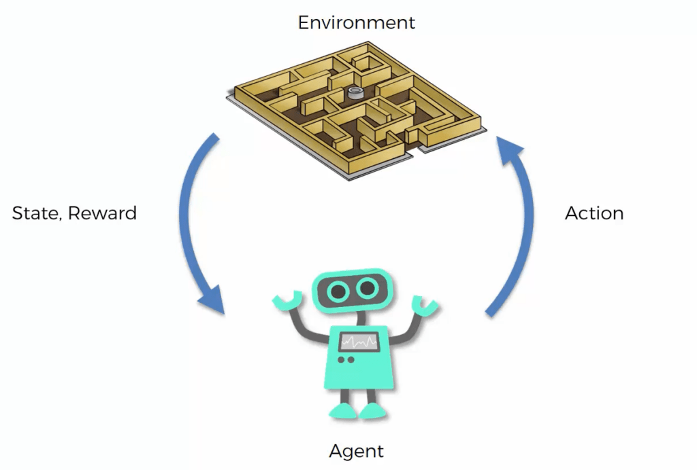
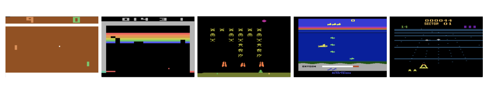
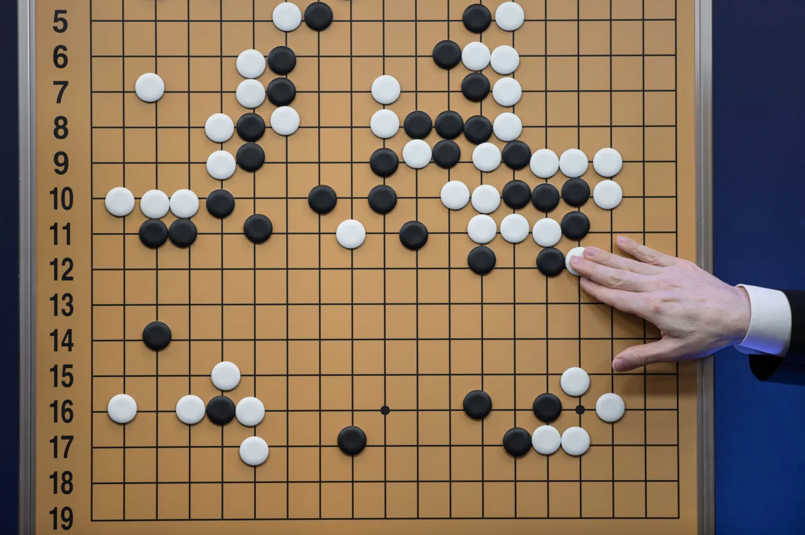
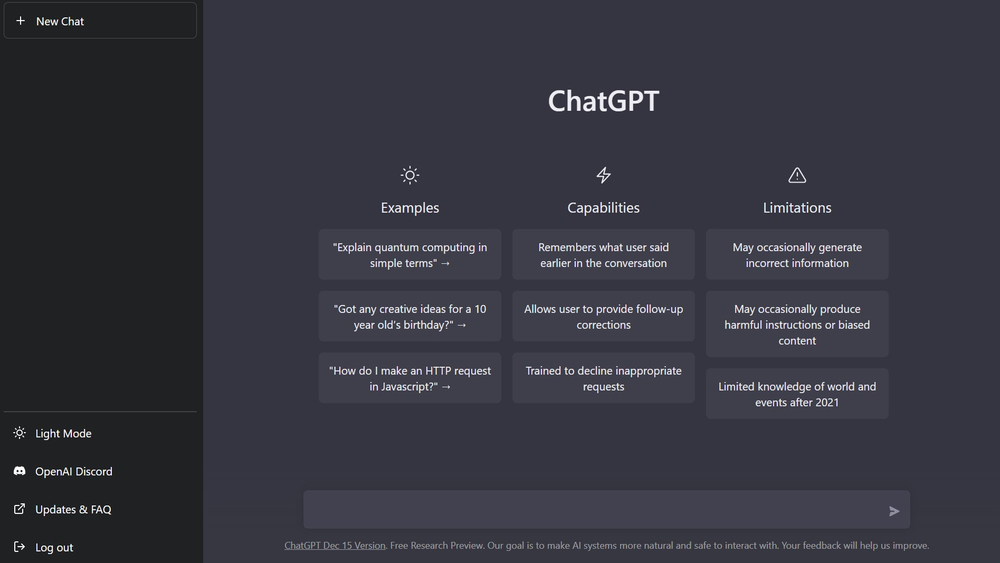
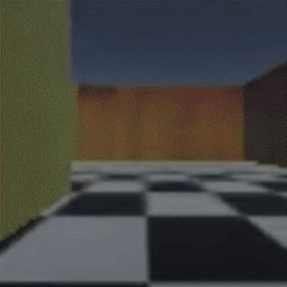
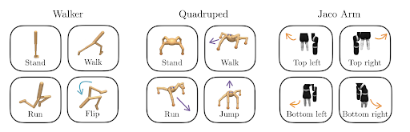
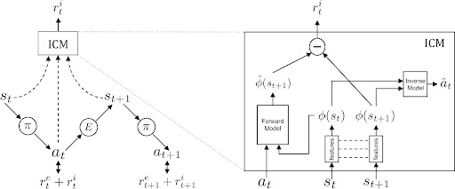
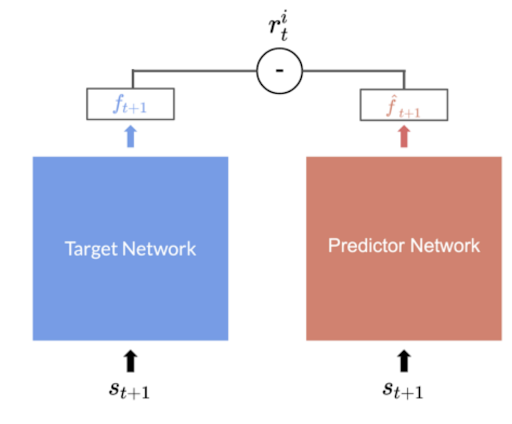
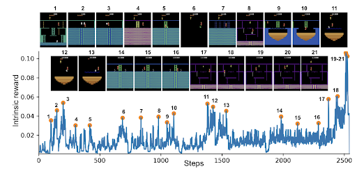
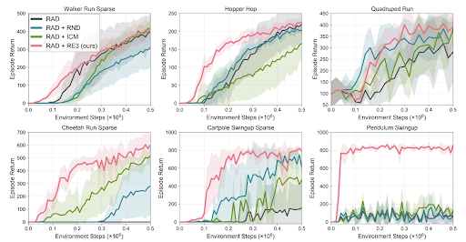

<!DOCTYPE html>
<html lang="en">
  <head>
    <meta charset="utf-8" />
    <meta name="viewport" content="width=device-width, initial-scale=1.0, maximum-scale=1.0, user-scalable=no" />

    <title></title>
    <link rel="stylesheet" href="dist/reveal.css" />
    <link rel="stylesheet" href="dist/theme/solarized.css" id="theme" />
    <link rel="stylesheet" href="plugin/highlight/zenburn.css" />
	<link rel="stylesheet" href="css/layout.css" />
	<link rel="stylesheet" href="plugin/customcontrols/style.css">


    <script defer src="dist/fontawesome/all.min.js"></script>

	<script type="text/javascript">
		var forgetPop = true;
		function onPopState(event) {
			if(forgetPop){
				forgetPop = false;
			} else {
				parent.postMessage(event.target.location.href, "app://obsidian.md");
			}
        }
		window.onpopstate = onPopState;
		window.onmessage = event => {
			if(event.data == "reload"){
				window.document.location.reload();
			}
			forgetPop = true;
		}

		function fitElements(){
			const itemsToFit = document.getElementsByClassName('fitText');
			for (const item in itemsToFit) {
				if (Object.hasOwnProperty.call(itemsToFit, item)) {
					var element = itemsToFit[item];
					fitElement(element,1, 1000);
					element.classList.remove('fitText');
				}
			}
		}

		function fitElement(element, start, end){

			let size = (end + start) / 2;
			element.style.fontSize = `${size}px`;

			if(Math.abs(start - end) < 1){
				while(element.scrollHeight > element.offsetHeight){
					size--;
					element.style.fontSize = `${size}px`;
				}
				return;
			}

			if(element.scrollHeight > element.offsetHeight){
				fitElement(element, start, size);
			} else {
				fitElement(element, size, end);
			}		
		}


		document.onreadystatechange = () => {
			fitElements();
			if (document.readyState === 'complete') {
				if (window.location.href.indexOf("?export") != -1){
					parent.postMessage(event.target.location.href, "app://obsidian.md");
				}
				if (window.location.href.indexOf("print-pdf") != -1){
					let stateCheck = setInterval(() => {
						clearInterval(stateCheck);
						window.print();
					}, 250);
				}
			}
	};


        </script>
  </head>
  <body>
    <div class="reveal">
      <div class="slides"><section  data-markdown><script type="text/template"><!-- .slide: class="drop" -->
<div class="" style="position: absolute; left: 0px; top: 0px; height: 1080px; width: 1920px; min-height: 1080px; display: flex; flex-direction: column; align-items: center; justify-content: center" absolute="true">

## Unsupervised Reinforcement Learning Benchmark

Methods of unsupervised pre-training for fast multi-task adaptation
</div></script></section><section  data-markdown><script type="text/template"><!-- .slide: class="drop" -->
<div class="" style="position: absolute; left: 0px; top: 0px; height: 1080px; width: 1920px; min-height: 1080px; display: flex; flex-direction: column; align-items: center; justify-content: center" absolute="true">

### Intro to Reinforcement Learning (RL)



Goal is to maximize accumulated reward
</div></script></section><section  data-markdown><script type="text/template"><!-- .slide: class="drop" -->
<div class="" style="position: absolute; left: 0px; top: 0px; height: 1080px; width: 1920px; min-height: 1080px; display: flex; flex-direction: column; align-items: center; justify-content: center" absolute="true">

### Reinforcment Learning
#### Achivements 


</div></script></section><section  data-markdown><script type="text/template"><!-- .slide: class="drop" -->
<div class="" style="position: absolute; left: 0px; top: 0px; height: 1080px; width: 1920px; min-height: 1080px; display: flex; flex-direction: column; align-items: center; justify-content: center" absolute="true">

### Reinforcment Learning
#### Achivements 


</div></script></section><section  data-markdown><script type="text/template"><!-- .slide: class="drop" -->
<div class="" style="position: absolute; left: 0px; top: 0px; height: 1080px; width: 1920px; min-height: 1080px; display: flex; flex-direction: column; align-items: center; justify-content: center" absolute="true">

### Reinforcment Learning
#### Achivements 


</div></script></section><section  data-markdown><script type="text/template"><!-- .slide: class="drop" -->
<div class="" style="position: absolute; left: 0px; top: 0px; height: 1080px; width: 1920px; min-height: 1080px; display: flex; flex-direction: column; align-items: center; justify-content: center" absolute="true">

### Reinforcment Learning
#### Limitations

- cannot reuse models/data from similar environemnts
	- Unlike foundational models in CV (IMAGENET, BYOL) and NLP (GPT)
- Hard optimization - distributional shift during training
- Hard to specify a reward function
</div></script></section><section  data-markdown><script type="text/template"><!-- .slide: class="drop" -->
<div class="" style="position: absolute; left: 0px; top: 0px; height: 1080px; width: 1920px; min-height: 1080px; display: flex; flex-direction: column; align-items: center; justify-content: center" absolute="true">

### Reinforcment Learning
#### Exploration vs Exploitation

-   Sparse reward environments pose a challenge for optimization, as most trajectories get 0 reward
-   We can add an auxiliary reward to facilitate exploration
-   Penalize already visited states
-   TV problem:
    -   The agent may encounter a TV producing endless noise and will be motivated to procrastinate and stay watching the TVthe exploration exploitation problem
</div></script></section><section  data-markdown><script type="text/template"><!-- .slide: class="drop" -->
<div class="" style="position: absolute; left: 0px; top: 0px; height: 1080px; width: 1920px; min-height: 1080px; display: flex; flex-direction: column; align-items: center; justify-content: center" absolute="true">

### Reinforcment Learning
#### TV problem


</div></script></section><section  data-markdown><script type="text/template"><!-- .slide: class="drop" -->
<div class="" style="position: absolute; left: 0px; top: 0px; height: 1080px; width: 1920px; min-height: 1080px; display: flex; flex-direction: column; align-items: center; justify-content: center" absolute="true">

### Unsupervised Reinforcement Learning Benchmark
- Many methods develop exploration strategies
- Propose an unsupervised exploration stage to later help learning tasks later
- The benchmark tries to establish a comparison of algorithms for transferring unsupervised exploration to specific tasks
</div></script></section><section  data-markdown><script type="text/template"><!-- .slide: class="drop" -->
<div class="" style="position: absolute; left: 0px; top: 0px; height: 1080px; width: 1920px; min-height: 1080px; display: flex; flex-direction: column; align-items: center; justify-content: center" absolute="true">

### Outline

- Preliminaries and notations
- Unsupervised Reinforcement Learning Benchmark
- Exploration algorithms
- New approach to unsupervised pre-training
- World models and relation to unsupervised pre-training
</div></script></section><section  data-markdown><script type="text/template"><!-- .slide: class="drop" -->
<div class="" style="position: absolute; left: 0px; top: 0px; height: 1080px; width: 1920px; min-height: 1080px; display: flex; flex-direction: column; align-items: center; justify-content: center" absolute="true">

### Preliminaries and notations
#### Outline
- MDP definitions
- Reinforcement learning objective
- Q and Value functions - bellman equation
- Policy Gradient
- On-policy vs Off-policy
</div></script></section><section  data-markdown><script type="text/template"><!-- .slide: class="drop" -->
<div class="" style="position: absolute; left: 0px; top: 0px; height: 1080px; width: 1920px; min-height: 1080px; display: flex; flex-direction: column; align-items: center; justify-content: center" absolute="true">

### Markov Decision Process
#### MDP

- MDP = < S, T, A, R >
- S = state
- T = transition `$T: S\times A \rightarrow S$`
- A = action (real or discrete)
- R = reward `$R: S\times A \rightarrow \mathbb{R}$`
</div></script></section><section  data-markdown><script type="text/template"><!-- .slide: class="drop" -->
<div class="" style="position: absolute; left: 0px; top: 0px; height: 1080px; width: 1920px; min-height: 1080px; display: flex; flex-direction: column; align-items: center; justify-content: center" absolute="true">

### Reinforcement learning objective

- The goal is to find a policy `$\pi:S\rightarrow A$` that maximizes the expected discounted reward `$\mathbb{E}_{\tau\sim\pi}\left[\sum_{t=0}^T\gamma^tr_t\right]$`
-   Additional definitions:
    - `$Q^\pi(s,a)=\mathbb{E}_{\tau\sim\pi}\left[\sum_{t=0}^T\gamma^tr_t|s_0=s,a_0=a\right]$`
    - `$V^\pi(s)=\mathbb{E}_{\tau\sim\pi}\left[\sum_{t=0}^T\gamma^tr_t|s_0=s\right]$`
-   Using these definitions we can define the optimal policy as: 
    - `$\pi(s)=argmax_a Q^\pi(s,a)$`
</div></script></section><section  data-markdown><script type="text/template"><!-- .slide: class="drop" -->
<div class="" style="position: absolute; left: 0px; top: 0px; height: 1080px; width: 1920px; min-height: 1080px; display: flex; flex-direction: column; align-items: center; justify-content: center" absolute="true">

### Policy Gradient

-   One way to find the policy is to optimize the expected return directly.
-   We can rewrite `$R^\pi = \mathbb{E}_{\tau\sim\pi}\left[\sum_{t=0}^T\gamma^tr_t\right]$` as function of the policy:
- `$P(\tau|\theta) = P(s_0)\prod_{t=0}P(s_{t+1}|s_t,a_t)$`
- `$G_\tau = \sum_{t=0}^T\gamma^tr_t$`
- `$R^{\pi_\theta} = \sum_{\tau\sim\pi} P(\tau|\theta)G_\tau$`
- `$\nabla_{\theta} R^{\pi_\theta} = \mathbb{E}_{\tau\sim\pi}\left[\sum_{t-0}^T\nabla_{\theta} log\pi(a_t|s_t)G_\tau\right]$`
-   Now we can just take the derivative with respect to policy parameters and do gradient ascent to maximize this objective
-   <mark>The trajectories came from the same policy that we are optimizing - cannot reuse old trajectories</mark>
</div></script></section><section  data-markdown><script type="text/template"><!-- .slide: class="drop" -->
<div class="" style="position: absolute; left: 0px; top: 0px; height: 1080px; width: 1920px; min-height: 1080px; display: flex; flex-direction: column; align-items: center; justify-content: center" absolute="true">

### Q-Learning

-   Another approach to find the optimal policy is to look at the bellman equation:
    -   `$Q(s_t,a_t) = \mathbb{E}_{s'\sim p(s'|s,a)}[r_{t+1}+\gamma Q(s',a')]$`
-   Instead if learning `$\pi$` directly, we will learn the Q function, where the loss is:
    - `$||{Q_*(s_t,a_t) - \mathbb{E}_{s'\sim p(s'|s,a)}[r_{t+1}+\gamma Q(s',a')]}||^2$`
-   And we do standard gradient descent over the Q network
-   <mark> We are not dependant on the policy that produced these state/actions, all data is useful</mark>
</div></script></section><section  data-markdown><script type="text/template"><!-- .slide: class="drop" -->
<div class="" style="position: absolute; left: 0px; top: 0px; height: 1080px; width: 1920px; min-height: 1080px; display: flex; flex-direction: column; align-items: center; justify-content: center" absolute="true">

### On-Policy VS Off-Policy

-   On policy methods such as policy gradient, need to throw away all trajectories collected, after policy update, and collect new policies

-   Off policy methods, such as Q-Learning, can reuse trajectories from old policy
    -   These methods use a replay buffer, which stores all trajectories, and is gradually updated as we improve the policy

-   This is why off policy methods considered more sample efficient
-   This is why pre-training methods, where the goal is to be more sample efficient,  focus on this (We focus on DDPG which is a continuous Q-learning variant)
</div></script></section><section  data-markdown><script type="text/template"><!-- .slide: class="drop" -->
<div class="" style="position: absolute; left: 0px; top: 0px; height: 1080px; width: 1920px; min-height: 1080px; display: flex; flex-direction: column; align-items: center; justify-content: center" absolute="true">

### Unsupervised Reinforcement Learning Benchmark

-   Unsupervised learning pretraining stage - environment without any reward
-   Task fine-tuning stage - a set of tasks with a predefined reward
-   Using a number of steps in the pretraining stage, solve a specific task using as few steps as possible
</div></script></section><section  data-markdown><script type="text/template"><!-- .slide: class="drop" -->
<div class="" style="position: absolute; left: 0px; top: 0px; height: 1080px; width: 1920px; min-height: 1080px; display: flex; flex-direction: column; align-items: center; justify-content: center" absolute="true">

### Unsupervised Reinforcement Learning Benchmark

-   The benchmark tests on 4 environments with 4 tasks each
-   There is a distinction between pixel and state based observations
-   8 exploration algorithms are compared during pre-training stage
-   The policy trained during pre-training is used for fine-tuning on the supervised task
- We focus on ICM and RND algorithms as they performed the best

</div></script></section><section  data-markdown><script type="text/template"><!-- .slide: class="drop" -->
<div class="" style="position: absolute; left: 0px; top: 0px; height: 1080px; width: 1920px; min-height: 1080px; display: flex; flex-direction: column; align-items: center; justify-content: center" absolute="true">

### ICM review

-   Intrinsic reward construction
-   Predict state representation, learned from predicting action from consecutive states
-   Inverse model to fight TV problem


</div></script></section><section  data-markdown><script type="text/template"><!-- .slide: class="drop" -->
<div class="" style="position: absolute; left: 0px; top: 0px; height: 1080px; width: 1920px; min-height: 1080px; display: flex; flex-direction: column; align-items: center; justify-content: center" absolute="true">

### RND review

-   Reward definition: `$||\hat{f}(s_{t+1})-f(s_{t+1})||$`
-   Predict random representation
-   Optimize   such that we minimize the reward
-   This objective is also the intrinsic reward
-   First better then average human performance on ATARI Montezuma game


</div></script></section><section  data-markdown><script type="text/template"><!-- .slide: class="drop" -->
<div class="" style="position: absolute; left: 0px; top: 0px; height: 1080px; width: 1920px; min-height: 1080px; display: flex; flex-direction: column; align-items: center; justify-content: center" absolute="true">

RND review


</div></script></section><section  data-markdown><script type="text/template"><!-- .slide: class="drop" -->
<div class="" style="position: absolute; left: 0px; top: 0px; height: 1080px; width: 1920px; min-height: 1080px; display: flex; flex-direction: column; align-items: center; justify-content: center" absolute="true">

RE3 review

-   Penalize states by nearest Neighbor density in random network representation
-   Notes that the main purpose of intrinsic exploration reward is states entropy maximization
-   Did analysis of unsupervised pre-training but no rigorous tests as done in URLB (only 2 tasks, vs 12 in URLB)
-   Important as we saw big variance in results
</div></script></section><section  data-markdown><script type="text/template"><!-- .slide: class="drop" -->
<div class="" style="position: absolute; left: 0px; top: 0px; height: 1080px; width: 1920px; min-height: 1080px; display: flex; flex-direction: column; align-items: center; justify-content: center" absolute="true">

### RE3 review


</div></script></section><section  data-markdown><script type="text/template"><!-- .slide: class="drop" -->
<div class="" style="position: absolute; left: 0px; top: 0px; height: 1080px; width: 1920px; min-height: 1080px; display: flex; flex-direction: column; align-items: center; justify-content: center" absolute="true">

Unsupervised Pretraining Setting

-   In URLB, at the pretraining stage, a policy is trained using an intrinsic reward
-   The intrinsic reward is calculated by the tested exploration algorithms
-   The exploration policy can learn more efficient representations
-   As vector states representation is already minimal, there is not much to improve
-   Pixel based observations on the other hand, are much less compact, and efficient encoders can be learned (some more references)
</div></script></section><section  data-markdown><script type="text/template"><!-- .slide: class="drop" -->
<div class="" style="position: absolute; left: 0px; top: 0px; height: 1080px; width: 1920px; min-height: 1080px; display: flex; flex-direction: column; align-items: center; justify-content: center" absolute="true">

### Preliminary Thesis results

-   Instead of transferring the policy, we transfer the data - pre-populate the replay buffer (Similar approach with known reward function)
-   Further improve efficiency by doing more updates per step at start of training, and decrease updates per step as task learning progresses
</div></script></section><section  data-markdown><script type="text/template"><!-- .slide: class="drop" -->
<div class="" style="position: absolute; left: 0px; top: 0px; height: 1080px; width: 1920px; min-height: 1080px; display: flex; flex-direction: column; align-items: center; justify-content: center" absolute="true">

# Thank You!
</div></script></section><section  data-markdown><script type="text/template"><!-- .slide: class="drop" -->
<div class="" style="position: absolute; left: 0px; top: 0px; height: 1080px; width: 1920px; min-height: 1080px; display: flex; flex-direction: column; align-items: center; justify-content: center" absolute="true">

World Models

-   World models define the dynamics of the environment :
    - t
-   In stochastic environments :
-   In deterministic environments: 
-   Model based RL uses this model to plan ahead
-   Usually in real world problems, the world model is hard to get accurately
-   A line of work tries to learn the model with the policy, and continue train in the model, while dreaming [schmidthuber,PlaNET, Dreamer v1,2,3] - producing trajectories using the model instead of the environment
-   possible benefit in unsupervised RL
</div></script></section><section  data-markdown><script type="text/template"><!-- .slide: class="drop" -->
<div class="" style="position: absolute; left: 0px; top: 0px; height: 1080px; width: 1920px; min-height: 1080px; display: flex; flex-direction: column; align-items: center; justify-content: center" absolute="true">

Dreamer V3 review

-   A recent world model, solved challenging games in record time
-   By utilizing the model to generate trajectories, can learn from much less real environment interactions
-   SOTA results on ATARI100K benchmark
-   Based on an LSTM, with special discrete representation as a regularization
-   The policy is trained on the world model representation instead of the actual state
-   Showed many uses in other works (lexa and more)
</div></script></section><section  data-markdown><script type="text/template"><!-- .slide: class="drop" -->
<div class="" style="position: absolute; left: 0px; top: 0px; height: 1080px; width: 1920px; min-height: 1080px; display: flex; flex-direction: column; align-items: center; justify-content: center" absolute="true">

Suggestion for further work

-   Our idea is instead of repopulating the replay buffer with exploration stage trajectories (with irrelevant exploration reward)
-   Learn a world model, and transfer it to the finetuning stage, while finetuning the reward model
-   No need to store large amounts of exploration data, also improving reward model can be more beneficial from task training
</div></script></section></div>
    </div>

    <script src="dist/reveal.js"></script>

    <script src="plugin/markdown/markdown.js"></script>
    <script src="plugin/highlight/highlight.js"></script>
    <script src="plugin/zoom/zoom.js"></script>
    <script src="plugin/notes/notes.js"></script>
    <script src="plugin/math/math.js"></script>
	<script src="plugin/mermaid/mermaid.js"></script>
	<script src="plugin/chart/chart.min.js"></script>
	<script src="plugin/chart/plugin.js"></script>
	<script src="plugin/customcontrols/plugin.js"></script>

    <script>
      function extend() {
        var target = {};
        for (var i = 0; i < arguments.length; i++) {
          var source = arguments[i];
          for (var key in source) {
            if (source.hasOwnProperty(key)) {
              target[key] = source[key];
            }
          }
        }
        return target;
      }

	  function isLight(color) {
		let hex = color.replace('#', '');

		// convert #fff => #ffffff
		if(hex.length == 3){
			hex = `${hex[0]}${hex[0]}${hex[1]}${hex[1]}${hex[2]}${hex[2]}`;
		}

		const c_r = parseInt(hex.substr(0, 2), 16);
		const c_g = parseInt(hex.substr(2, 2), 16);
		const c_b = parseInt(hex.substr(4, 2), 16);
		const brightness = ((c_r * 299) + (c_g * 587) + (c_b * 114)) / 1000;
		return brightness > 155;
	}

	var bgColor = getComputedStyle(document.documentElement).getPropertyValue('--r-background-color').trim();
	var isLight = isLight(bgColor);

	if(isLight){
		document.body.classList.add('has-light-background');
	} else {
		document.body.classList.add('has-dark-background');
	}

      // default options to init reveal.js
      var defaultOptions = {
        controls: true,
        progress: true,
        history: true,
        center: true,
        transition: 'default', // none/fade/slide/convex/concave/zoom
        plugins: [
          RevealMarkdown,
          RevealHighlight,
          RevealZoom,
          RevealNotes,
          RevealMath.MathJax3,
		  RevealMermaid,
		  RevealChart,
		  RevealCustomControls,
        ],


    	allottedTime: 120 * 1000,

		mathjax3: {
			mathjax: 'plugin/math/mathjax/tex-mml-chtml.js',
		},
		markdown: {
		  gfm: true,
		  mangle: true,
		  pedantic: false,
		  smartLists: false,
		  smartypants: false,
		},

		mermaid: {
			theme: isLight ? 'default' : 'dark',
		},

		customcontrols: {
			controls: [
			]
		},
      };

      // options from URL query string
      var queryOptions = Reveal().getQueryHash() || {};

      var options = extend(defaultOptions, {"width":1920,"height":1080,"margin":0.04,"controls":true,"progress":true,"slideNumber":false,"transition":"slide","transitionSpeed":"default"}, queryOptions);
    </script>

    <script>
      Reveal.initialize(options);
    </script>
  </body>

  <!-- created with Advanced Slides -->
</html>
